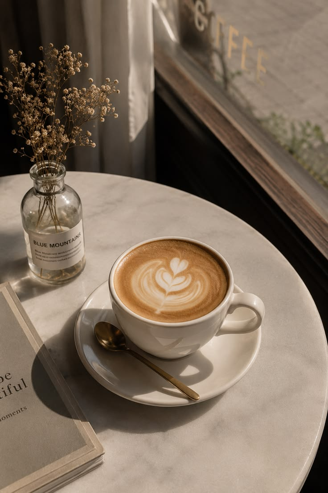
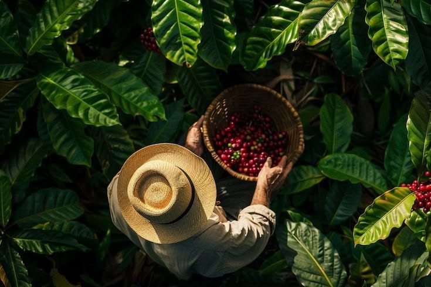
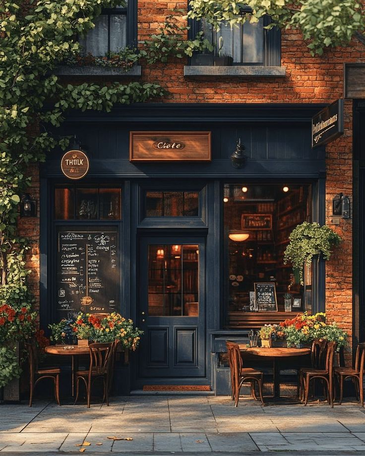
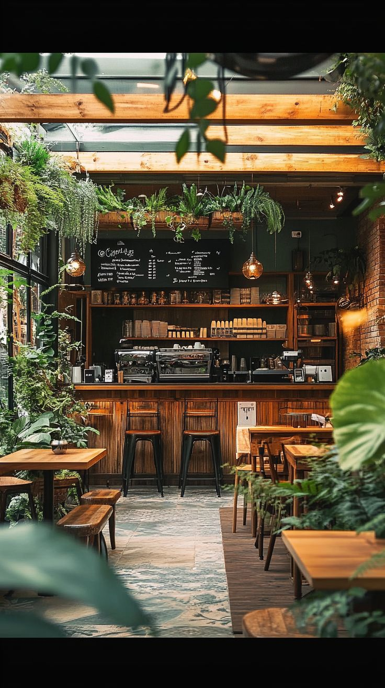
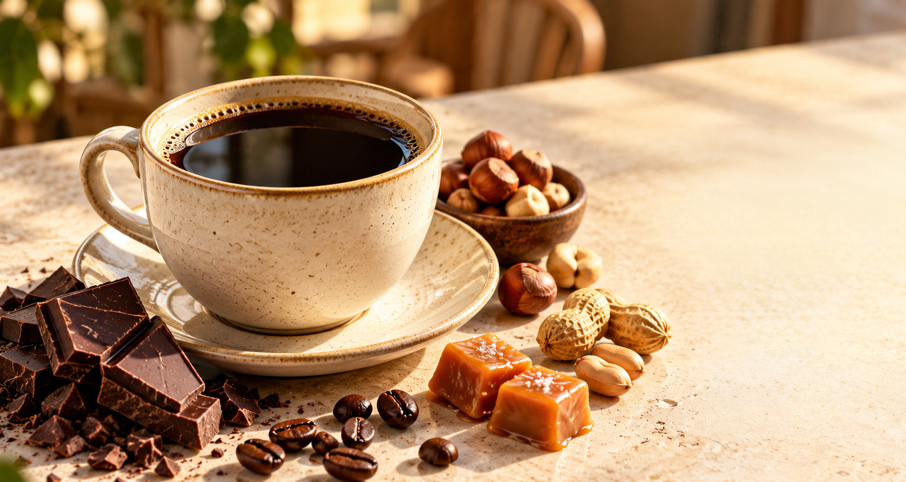
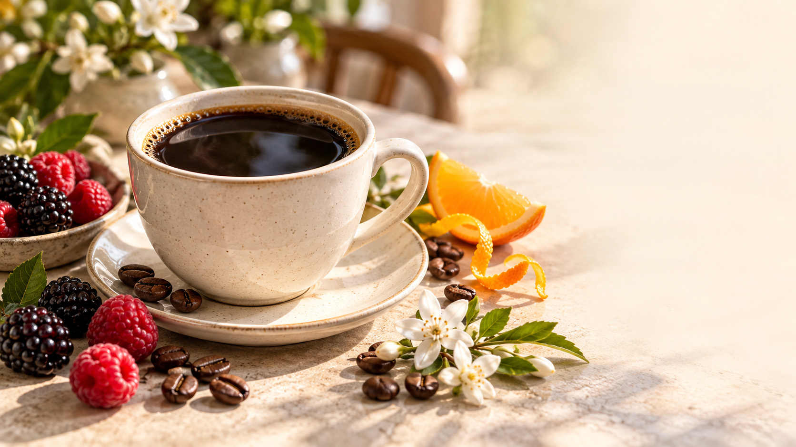

Меню
Кофе, холодные напитки, чай и сезонные новинки.

История кофе
Легенда о пастухе Калди и путь кофе по всему миру.
Способы заваривания
Турка, воронка, френч-пресс и другие способы.
О кофейне
Coffee Compass — небольшая кофейня в Самаре. Мы назвали её «компасом», потому что у каждого зерна есть родина, и нам нравится показывать, какой путь оно прошло до вашей чашки.
Найти нас можно по адресу:
г. Самара, Молодогвардейская ул., 151.
Заходите утром и вечером за тёплым напитком.

| День | Часы работы |
|---|---|
| Понедельник – пятница | 8:00 – 21:00 |
| Суббота – воскресенье | 9:00 – 22:00 |
Что внутри
- Светлый зал с большими окнами.
- Барная стойка, где можно наблюдать за работой бариста.
- Стена с картой мира: на ней отмечены страны, откуда мы привозим зёрна.
- Розетки у столиков, чтобы можно было поработать или поучиться.

Наши зёрна
Мы используем только арабику: она мягче робусты и богаче по вкусу. Для кофе с молоком и для фильтр-кофе у нас разные зёрна.

Бразилия, арабика
Для американо, капучино, латте и рафов. Средняя обжарка, мягкий вкус с низкой кислотностью, который хорошо дружит с молоком.
орех шоколад карамель
Эфиопия, арабика
Для фильтр-кофе. Светлая обжарка помогает раскрыться цветочным и ягодным ноткам. Эфиопия — родина кофе, а с ней связана легенда о пастухе Калди.
жасмин бергамот черникаПочему мы рассказываем про историю кофе
Каждая чашка в нашем меню — это маленькое путешествие. Бразильская арабика попала в Южную Америку в 1727 году, эфиопский кофе связан с легендой о козах и пастухе, а «кофе по-венски» появился после осады города турками.
Мы хотим, чтобы вы знали, откуда берётся ваш напиток. Поэтому на сайте есть страница об истории кофе и страница о способах заваривания, а в кофейне мы с радостью расскажем всё это за чашкой.
Читать историю кофе